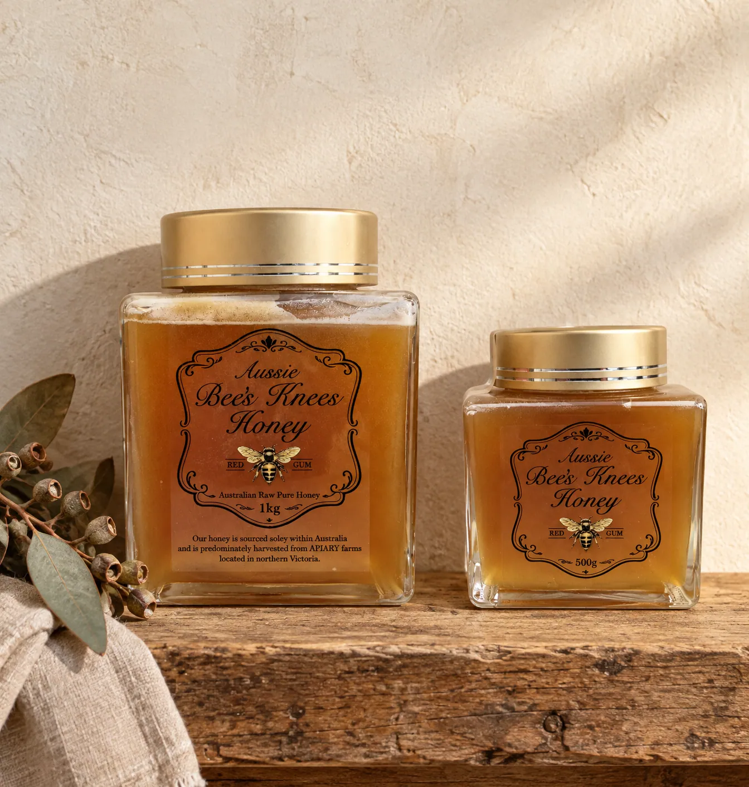

Two sizes
500g or 1kg?
Same honey, same label, same harvest. The only real question is how quickly you get through a jar.
Prices and postage are not published yet. Ask, and you get a straight answer from the people who jar it — not a newsletter.

Which one to pick
500g
The first jar
Enough to find out whether a single-variety honey is your thing. It sits on a cupboard shelf without a fight, and it is the smaller of the two jars on the label.
1kg
The one to commit to
The jar to buy if you already know you will finish it. Same square glass and brushed gold lid, twice the honey, one lid to lose instead of two.
What is the same
Everything except the amount
Both jars are the same red gum honey, raw, sourced within Australia and predominantly harvested from apiary farms in northern Victoria. Both are square glass with a brushed gold screw lid. Both say the variety on the front.
Either jar may arrive with the top set solid. That is the honey doing what raw honey does, and it softens in a bowl of warm water.
One question left, and it’s yours to ask.
Send one line and you will be told what a jar costs, what postage is, and whether it can reach you. No basket, no account, no newsletter.
Prices and postage are not published yet. Ask, and you get a straight answer from the people who jar it — not a newsletter.